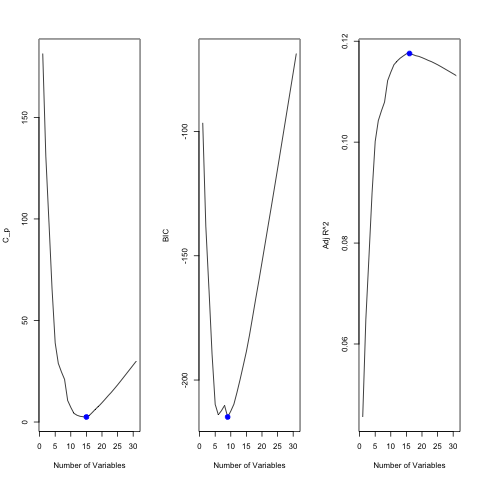
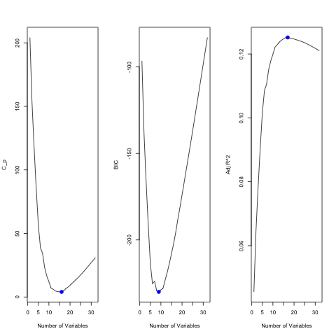
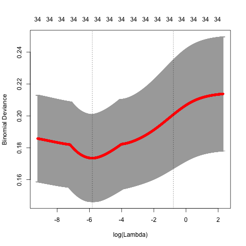
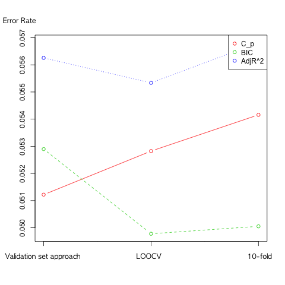
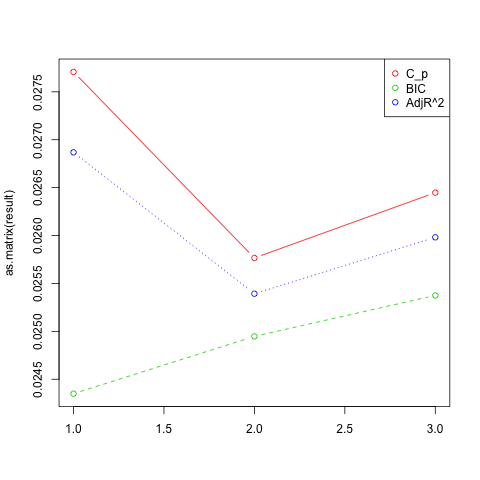

R을 활용한 기업 부도 분석 및 예측 보고서
요약
현대 사회에서의 한 기업의 부도는 그 기업과 연계된 다른 기업 및 금융 기관까지 영향을 주기 떄문에 기업의 부도가 사회적으로 큰 손실이 된다. 이러한 사회적 손실을 줄이기 위해서는 기업의 부도 가능성을 예측하고 미리 예방하는 것이 필요하다. 따라서 본 연구는 기업의 재무제표와 부도 여부가 나타나 있는 데이터를 이용해 기업의 부도에 영향을 끼치는 요인을 통계적 학습 방법으로 분석하고 기업의 부도 가능성을 예측하고자 한다. 사용하는 데이터는 1998~2003년의 스페인 소재 기업을 대상으로한 파산여부를 조사한 데이터로, 이 데이터에는 BANKRUPTCY 변수와 함께 총 34개의 변수가 포함되어 있다. 이 중 파산여부를 예측하는데 필요없는 변수와 누락된 데이터를 모두 제거한 다음 Subset selection, Ridge regression, Lasso 방법을 이용해서 사용할 변수를 선택한다. 선택된 변수끼리 Cross-validation 방법을 이용해 가장 적은 오분류율을 보이는 최종 모델을 선택한다. 이렇게 선택된 최종 모델을 이용해서 Logistic regression, LDA, QDA, KNN 등의 분류 방법을 이용해 어떤 방법이 가장 부도 여부 예측을 잘하는지 비교하고 최종적으로 가장 좋은 방법을 선택하는 것이 이 연구의 목적이다.
1. 서론
현대 사회에서 한 기업의 부도는 그 기업 뿐만이 아니라 해당 기업과 거래하는 다른 기업까지도 큰 피해를 입거나 심지어는 연쇄 부도가 일어나는 경우가 있다. 또한 해당 기업과 연계되어 있는 금융 기관 역시 부실화된 기업으로 인해 막대한 손해를 입게 된다. 이는 사회적으로 큰 손실이 된다.
사회적 손실을 미리 예방하기 위해서는 기업의 부도 가능성을 미리 예측하는 것이 필요하다. 따라서 기업의 재무제표와 부도 여부를 나타내는 데이터를 통해 통계적 학습 방법론과 R 소프트웨어를 이용해서 어떤 요인들이 부도에 영향을 미치는지 알아본다. 또한 해당 데이터에서 기업의 부도 가능성을 잘 예측하는 모델과 분류 방법을 찾는 것을 목적으로 한다.
2장 데이터 설명에서는 1998~2003년 스페인 기업 대상 부도 여부 데이터의 각각 변수와 어떤 데이터를 사용할 것인지를 중점적으로 설명한다. 3장 분석 과정에서는 다양한 통계적 학습 방법을 통해 여러 변수들 중 가장 적합한 변수를 선택해 최종 모델을 만든다. 그리고 이 최종 모델을 이용해 어떤 분류 방법이 기업의 부도 여부를 가장 잘 예측하는 지를 비교한다. 4장 결론 에서는 분석을 통해 얻은 정보로 기업의 부도에 영향을 끼치는 변수들을 설명한다.
2. 데이터 설명
2.1. 데이터 개요
본 연구에서 사용할 데이터는 1998~2003년 까지의 스페인 소재 기업을 대상으로 조사한 기업의 재무제표와 상태정보, 부도 여부가 나타나있는 데이터이다.1 이 데이터는 총 34개의 변수로 구성되어 있고 8개의 질적변수와 26개의 양적변수가 있다. 34개 변수에 따른 2859개의 데이터 행이 있으며 변수에 따라 누락된 데이터가 존재한다. 누락된 데이터를 제거하고 분석을 진행한다.
2.2 질적 변수
아래의 표는 34개의 변수들 중 8개의 질적변수를 보여주고 있다.
| 변수 이름 | 타입 | 설명 |
|---|---|---|
| SIZE | small, medium, big | 기업의 크기 |
| SOCIAL_CODE | Co, Ltd, other | 기업 형태 |
| LINKED_GROUP | no, yes | 그룹 여부 |
| PROVINCE_CODE | 1..52(4,5,19,34,42,44,51 제외) | 지방 코드 |
| DELAY_ACCOUNTS | no, yes | DELAY (IN SENDING ITS ANNUAL ACCOUNTS) |
| AUDITED | no, yes | 감사 여부 |
| AUDITORS_OPINION | nothing, positive, minor, negative | 감사원 의견 |
| BANKRUPTCY | NO, YES | 부도 여부 |
2.3. 양적 변수
아래의 표는 34개의 변수들 중 26개의 양적변수를 보여주고 있다.
| 변수 이름 | 범위 | 설명 |
|---|---|---|
| YEAR | 1998 ~ 2003 | 기록 연도 |
| NUMBER_EMPLOYEES | 0 ~ 2662 | 직원 수 |
| AGE | -1 ~ 85 | 기업 연수 |
| NUMBER_PARTNERS | 0 ~ 75 | 협력 기업 수 |
| CHANGES_LOCATION | 0 ~ 8 | 기업 위치 변경 수 |
| DEBT_STRUCTURE | -99.07 ~ 134.48 | 부채 구조 |
| DEBT_COST | -0.87 ~ 8151.25 | 부채 비용 |
| DEBT_PAYING_AVAILABILITY | -7.27 ~ 345.05 | 부채 지불 능력 |
| DEBT_RATIO | -43094.47 ~ 17570.04 | 부채 비율 |
| WORKING_CAPITAL | -14.92 ~ 24.23 | 순운전(운영)자본 |
| WARRANTY | -526.22 ~ 46836.93 | WARRANTY |
| OPERATING_INCOME_MARGIN | -45180.9 ~ 8791.51 | 영업이익률 |
| RETURN_OPERATING_ASSETS | -68775792 ~ 2885.159 | 운용자산순환률 |
| RETURN_EQUITY | -1825426 ~ 9349.018 | 자기자본이익률 |
| RETURN_ASSETS | -481.07 ~ 711.22 | 총자산순이익률 |
| STOCK_TURNOVER | -481.08 ~ 711.22 | 자본금회전율 |
| ASSET_TURNOVER | -0.33 ~ 112.28 | 자산회전율 |
| RECEIVABLE_TURNOVER | -905.96 ~ 17096.96 | 매출채권 회전율 |
| ASSET_ROTATION | -60947.59 ~ 90619.69 | 자본순환율 |
| FINANCIAL_SOLVENCY | -343.43 ~ 5481.22 | 재무건전성 |
| ACID_TEST | -315.79 ~ 5268.60 | 당좌 비율 |
| NUMBER_JUDICIAL_INCIDENCES_TOTAL | 0 ~ 5 | 법적 분쟁 발생 수 |
| NUMBER_JUDICIAL_INCIDENCES_YEAR | 0 ~ 1 | 최근 1년간 법적 분쟁 발생 수 |
| SPENT_JUDICIAL_INCIDENCES_TOTAL | 0 ~ 448342.4 | 법적 분쟁 부담 비용 |
| SPENT_JUDICIAL_INCIDENCES_YEAR | 0 ~ 445476.7 | 최근 1년간 법적 부쟁 부담 비용 |
| NUMBER_SERIOUS_INCIDENCES | 0 ~ 1 | 위험 사고 발생 수 |
3. 분석 과정
기업의 부도 여부 예측 분석에 앞서 BANKRUPTCY 변수를 반응변수로 선택하였다. BANKRUPTCY는 이진 데이터로 YES(부도), NO(부도아님)만 존재하며 재무제표와 상태정보가 해당 기업의 부도 여부에 어떠한 영향을 미쳤는지를 분석할 수 있는 기준이 된다.
분석 과정은 다음과 같다.
- 데이터 설정: 분석을 진행하기에 앞서 누락된 데이터와 필요없는 변수들을 제거하여 실제 분석에서 사용할 변수들만을 간추린다.
- 변수 선택: 변수 선택 방법인 Best subset, Forward selection, Backward selection, Ridge regression, Lasso 등을 이용해 모델을 선택한다.
- 최종 모델 선택: 5개의 선택된 모델들을 Validation set approach, LOOCV, 10-fold 등을 이용해 오분류율을 비교하여 오분류율이 가장 낮은 모델을 선택한다.
- Bootstrap : 선택한 모델에서 임의의 X 변수를 선택해 Bootstrap을 이용하여 모수 α 를 추정하고 표준편차와 비교한다.
- 분류 방법 비교 : 선택한 모델을 이용해서 Logsitic regression, LDA, QDA, KNN 등의 분류 방법을 이용해 어떤 방법이 적절히 낮은 오분류율을 가지면서 기업의 부도 여부를 잘 예측할 수 있는지 비교를 한다.
3.1. 데이터 설정
본격적인 분석 진행에 앞서 원활한 분석을 위해 변수별로 누락된 데이터 행을 제거하고 분석과 상관없는 변수들을 제거해야 한다. 가장 먼저 NA로 누락된 데이터가 있는 데이터 행을 먼저 제거했다. 또한 기업의 연수를 나타내는 AGE 변수에서 값이 -1을 나타내는 상식적으로 말이 되지 않는 데이터 행을 누락된 데이터로 분류하여 마찬가지로 제거하였다. 그리고 기업 형태를 나타내는 SOCIAL_CODE와 지방 코드를 나타내는 PROVINCE_CODE는 기업의 부도 여부에 영향을 미치지 않을 것으로 판단하여 사용할 변수에서 제외하였다. 데이터 수정 결과 34개의 변수와 2859개의 데이터 행을 가진 데이터에서 32개의 변수와 2383개의 데이터 행을 가진 데이터가 남았다. Validation set approach 사용시 에러를 방지할 목적으로 하나의 행을 더 제거하여 짝수 데이터 행을 만들어 총 2382개의 행을 가진 데이터가 되었다. 분석 과정에서 쓰일 데이터는 수정 후의 데이터인 32개의 변수와 2382개의 데이터 행을 가진 데이터를 기준으로 사용하는 것으로 한다.
3.2. 변수 선택
변수 선택 과정은 앞서 데이터 설정 과정에서 설정된 32개의 변수들 중 유의한 변수들을 선택하여 최적의 모델을 고르는 것을 목표로 한다. 변수 선택 방법으로 Best subset, Forward selection, Backward selection, Ridge regression, Lasso 등 총 5가지 방법을 사용하였다. 각 방법들을 사용할 때 32개의 변수를 사용하였고 Best subset, Forward selection, Backward selection 방법들은 C_p, BIC, AdjR^2 에 따라 각각 총 9개의 모형을 선택하였고, Ridge regression, Lasso 등은 각각 1개씩 총 2개의 모형을 선택하였다.
Subset selection
Subset selection의 방법으로 변수를 선택한 결과는 아래와 같다. 왼쪽부터 C_p, BIC, AdjR^2를 나타낸다.
Figure 1: Best subset 결과

Figure 2: Forward selection 결과

Figure 3: Backward selection 결과
먼저 C_p, BIC의 경우 가장 낮은 값이 최적의 모델이고, AdjR^2 의 경우 가장 높은 값이 최적의 결과이다. 그에 따라서 결정되는 각 선택 방법별 최적의 변수들은 아래의 표와 같다.2
| C_p | BIC | AdjR^2 |
|---|---|---|
| SIZE | SIZE | SIZE |
| NUMBER_EMPLOYEES | DEBT_COST | NUMBER_EMPLOYEES |
| AGE | RETURN_EQUITY | AGE |
| LINKED_GROUP | RETURN_ASSETS | LINKED_GROUP |
| DEBT_COST | NUMBER_JUDICIAL_INCIDENCES_YEAR | NUMBER_PARTNERS |
| WORKING_CAPITAL | SPENT_JUDICIAL_INCIDENCES_TOTAL | DEBT_COST |
| RETURN_EQUITY | AUDITED | WORKING_CAPITAL |
| RETURN_ASSETS | RETURN_EQUITY | |
| ASSET_TURNOVER | RETURN_ASSETS | |
| NUMBER_JUDICIAL_INCIDENCES_YEAR | ASSET_TURNOVER | |
| SPENT_JUDICIAL_INCIDENCES_TOTAL | NUMBER_JUDICIAL_INCIDENCES_YEAR | |
| NUMBER_SERIOUS_INCIDENCES | SPENT_JUDICIAL_INCIDENCES_TOTAL | |
| AUDITED | NUMBER_SERIOUS_INCIDENCES | |
| AUDITORS_OPINION | AUDITED | |
| AUDITORS_OPINION | ||
| 14 | 7 | 15 |
| C_p | BIC | AdjR^2 |
|---|---|---|
| SIZE | SIZE | SIZE |
| NUMBER_EMPLOYEES | DEBT_COST | NUMBER_EMPLOYEES |
| AGE | RETURN_EQUITY | AGE |
| LINKED_GROUP | RETURN_ASSETS | LINKED_GROUP |
| DEBT_COST | NUMBER_JUDICIAL_INCIDENCES_YEAR | NUMBER_PARTNERS |
| WORKING_CAPITAL | SPENT_JUDICIAL_INCIDENCES_TOTAL | DEBT_COST |
| RETURN_EQUITY | AUDITED | WORKING_CAPITAL |
| RETURN_ASSETS | RETURN_EQUITY | |
| ASSET_TURNOVER | RETURN_ASSETS | |
| NUMBER_JUDICIAL_INCIDENCES_YEAR | ASSET_TURNOVER | |
| SPENT_JUDICIAL_INCIDENCES_TOTAL | NUMBER_JUDICIAL_INCIDENCES_YEAR | |
| NUMBER_SERIOUS_INCIDENCES | SPENT_JUDICIAL_INCIDENCES_TOTAL | |
| AUDITED | NUMBER_SERIOUS_INCIDENCES | |
| AUDITORS_OPINION | AUDITED | |
| AUDITORS_OPINION | ||
| 14 | 7 | 15 |
| C_p | BIC | AdjR^2 |
|---|---|---|
| SIZE | SIZE | SIZE |
| NUMBER_EMPLOYEES | DEBT_COST | NUMBER_EMPLOYEES |
| AGE | RETURN_EQUITY | AGE |
| LINKED_GROUP | RETURN_ASSETS | LINKED_GROUP |
| DEBT_COST | NUMBER_JUDICIAL_INCIDENCES_YEAR | NUMBER_PARTNERS |
| WORKING_CAPITAL | SPENT_JUDICIAL_INCIDENCES_TOTAL | DEBT_COST |
| RETURN_EQUITY | AUDITED | WORKING_CAPITAL |
| RETURN_ASSETS | RETURN_EQUITY | |
| ASSET_TURNOVER | RETURN_ASSETS | |
| NUMBER_JUDICIAL_INCIDENCES_YEAR | ASSET_TURNOVER | |
| SPENT_JUDICIAL_INCIDENCES_TOTAL | NUMBER_JUDICIAL_INCIDENCES_YEAR | |
| NUMBER_SERIOUS_INCIDENCES | SPENT_JUDICIAL_INCIDENCES_TOTAL | |
| AUDITED | NUMBER_SERIOUS_INCIDENCES | |
| AUDITORS_OPINION | AUDITED | |
| AUDITORS_OPINION | ||
| 14 | 7 | 15 |
Best subset, Forward selection, Backward selection 세 방법 모두 C_p, BIC, AdjR^2로 선택된 변수들이 동일하였다.
Ridge regression, Lasso
Ridge regression과 Lasso는 먼저 λ 를 정해야 한다. 따라서 λ 를 정하는 방법으로 R의 glmnet 패키지의 cv.glmnet 을 이용하여 최적의 λ 를 구하였다.3

Figure 4: Ridge regression
Ridge regression의 최적의 λ 값은 0.002977314 이며, 어떤 변수 계수도 0이 되지 않기 때문에 모든 변수를 선택한 것으로 정하였다.

Figure 5: Lasso
Lasso의 최적의 λ 값은 0.001071593 이며, 선택된 변수 개수는 13개이다.
Ridge와 Lasso가 선택한 변수들은 아래의 표와 같다.(factor별 질적변수를 1개로 취급하였기 때문에 위의 그래프 상단에 나온 변수 개수와는 약간 다르다)
| Ridge | Lasso |
|---|---|
| <모든 변수 선택됨> | SIZE |
| AGE | |
| LINKED_GROUP | |
| WORKING_CAPITAL | |
| RETURN_EQUITY | |
| RETURN_ASSETS | |
| ASSET_TURNOVER | |
| FINANCIAL_SOLVENCY | |
| NUMBER_JUDICIAL_INCIDENCES_TOTAL | |
| NUMBER_JUDICIAL_INCIDENCES_YEAR | |
| SPENT_JUDICIAL_INCIDENCES_TOTAL | |
| AUDITED | |
| AUDITORS_OPINION | |
| 32 | 13 |
3.3. 최종 모델 선택
최종 모델 선택 단계는 위의 변수 선택 단계에서 선택된 변수들을 이용해 세가지의 Cross-validation 방법을 사용하여 오분류율을 구하고 가장 낮은 오분류율을 보인 모델을 선택하는 단계이다. Cross-validation 방법으로 Validation set approach, LOOCV, 10-fold 등 세가지 방법을 사용하였고 비교 척도로 오분류율을 사용하기 위해서 Threshold를 0.1로 설정한 Logistic regression을 사용하였다. 2000개가 넘어가는 데이터를 이용해 LOOCV를 실행시키기에는 시간이 오래 걸리므로, K가 200인 K-fold 방식을 빌려 LOOCV를 측정하였다. 모든 Cross-validation 방법은 가장 처음에 training 데이터를 만들 때 R의 sample 함수를 이용해 무작위로 데이터를 선택한 다음 진행한다. 다른 모델들에서도 정확한 비교를 위해 동일한 시드 번호를 정해서 training sample을 고정시키고 진행하였다.
이 단계에서는 Subset selection으로 나온 세가지 모델에 Cross-validation을 적용하여 비교하고 그 중 오분류율이 가장 적게 나온 방법과 Ridge, Lasso의 Cross-validation 오분류율을 각각 구하고 가장 낮은 오분류율을 가지는 모델을 최종 모델로 선택한다.
Subset selection 비교
| C_p | BIC | AdjR^2 | |
|---|---|---|---|
| Validation set approach | 0.05121746 | 0.05289673 | 0.05625525 |
| LOOCV | 0.05282276 | 0.04977804 | 0.05533741 |
| 10-fold | 0.05415730 | 0.05005212 | 0.05681556 |
| C_p | BIC | AdjR^2 | |
|---|---|---|---|
| Validation set approach | 0.05121746 | 0.05289673 | 0.05625525 |
| LOOCV | 0.05282276 | 0.04977804 | 0.05533741 |
| 10-fold | 0.05415730 | 0.05005212 | 0.05681556 |
| C_p | BIC | AdjR^2 | |
|---|---|---|---|
| Validation set approach | 0.05121746 | 0.05289673 | 0.05625525 |
| LOOCV | 0.05282276 | 0.04977804 | 0.05533741 |
| 10-fold | 0.05415730 | 0.05005212 | 0.05681556 |

Figure 6: Subset selection 결과 그래프
Best subset, Forward selection, Backward selection 세가지 방법이 모두 동일한 변수를 선택하였으므로 세가지 Cross-validation 오분류율 역시 동일하게 나왔다. 따라서 Ridge, Lasso와 함께 비교할 Subset selection 방법은 Best subset으로 선택하였다.
Best subset, Ridge, Lasso 비교
| Ridge | Lasso | |
|---|---|---|
| Validation set approach | 0.05541562 | 0.05289673 |
| LOOCV | 0.05776089 | 0.05010032 |
| 10-fold | 0.05765654 | 0.05145151 |

Figure 7: Best subset, Ridge, Lasso 비교
| C_p(Best subset) | BIC(Best subset) | AdjR^2(Best subset) | Ridge | Lasso | |
|---|---|---|---|---|---|
| Validation set approach | 0.05121746 | 0.05289673 | 0.05625525 | 0.05541562 | 0.05289673 |
| LOOCV | 0.05282276 | 0.04977804 | 0.05533741 | 0.05776089 | 0.05010032 |
| 10-fold | 0.05415730 | 0.05005212 | 0.05681556 | 0.05765654 | 0.05145151 |
Subset selection, Ridge, Lasso의 오분류율을 최종 비교한 결과 Best subset의 BIC 방법으로 선택된 변수를 이용한 모델의 오분류율이 0.04977804로 가장 낮게 나왔다. 따라서 최종 모델로 선택된 변수들은 아래의 표와 같다.
| 변수 이름 | 범위 | 설명 |
|---|---|---|
| SIZE | small, medium, big | 기업의 크기 |
| DEBT_COST | -0.87~8151.25 | 부채 비용 |
| RETURN_EQUITY | -1825426 ~ 9349.018 | 자기자본이익률 |
| RETURN_ASSETS | -481.07 ~ 711.22 | 총자산순이익률 |
| NUMBER_JUDICIAL_INCIDENCES_YEAR | 0 ~ 1 | 법적 분쟁 발생 수 |
| SPENT_JUDICAL_INCIDENCES_TOTAL | 0 ~ 448342.4 | 법적 분쟁 부담 비용 |
| AUDITED | no, yes | 감사 여부 |
3.4. Bootstrap
3.5. 분류 방법 비교
마지막으로 이번 단계에서는 최종 선택된 모델을 이용해 반응변수를 BANKRUPTCY 로, 독립변수를 SIZE, DEBT_COST, RETURN_EQUITY, RETURN_ASSETS, NUMBER_JUDICIAL_INCIDENCES_YEAR, SPENT_JUDICAL_INCIDENCES_TOTAL, AUDITED 로 설정하여 Logistic regression, LDA, QDA, KNN 분류 방법을 이용해 BANKRUPTCY를 분류하고, 어떤 방법이 가장 예측을 잘하는지 비교하였다. 먼저 training 데이터와 test 데이터를 5:5의 비율로 랜덤하게 설정하여 진행하였다.4
| Logistic | NO | YES |
|---|---|---|
| NO | 1126 | 15 |
| YES | 39 | 11 |
| LDA | NO | YES |
|---|---|---|
| NO | 1141 | 19 |
| YES | 24 | 7 |
| QDA | NO | YES |
|---|---|---|
| NO | 1104 | 16 |
| YES | 61 | 10 |
| KNN(K=3) | NO | YES |
|---|---|---|
| NO | 1162 | 21 |
| YES | 3 | 5 |
| Logistic | LDA | QDA | KNN(K=3) |
|---|---|---|---|
| 0.04534005 | 0.03610411 | 0.06465155 | 0.02015113 |
| Logistic | LDA | QDA | KNN(K=3) |
|---|---|---|---|
| 0.4230769 | 0.2692308 | 0.3846154 | 0.1923077 |
오분류율이 가장 낮은 분류방법은 KNN 으로 오분류율이 약 2%로 나타났다. 하지만 KNN의 경우 기업 부도 예측 성공을이 19%로 가장 낮았다. 반면 Logistic, QDA 은 오분류율이 4.5%, 6.5%로 KNN 보단 조금 높지만, 기업 부도 예측 성공율이 Logistic은 42%, QDA는 38%로 KNN의 19%보다 월등히 높은 것을 알 수 있었다. 본 연구의 궁극적인 목표는 기업 부도 가능성을 정확히 예측하는 것이므로 이에 해당하는 Logistic과 QDA가 LDA, KNN보다 더 좋은 분류 방법이라는 것을 알 수 있다. 더 나아가서 Logistic과 QDA를 비교하면 Logistic은 QDA보다 오분류율이 낮으면서 동시에 기업 부도 예측 성공율이 더 높기 때문에 Logistic, LDA, QDA, KNN 중 가장 좋은 분류 방법은 Logistic 이라는 것을 알 수 있다.
4. 결론
본 연구의 목적인 기업의 부도 가능성을 정확하게 예측하기 위해서 Best subset, Ridge regression, Lasso 등을 이용해 변수선택을 한 후 Cross-validation을 이용해 최적의 모델을 선택한 후 Logistic regression, LDA, QDA, KNN 등의 분류방법을 시행하였다. 최적의 모델은 SIZE, DEBT_COST, RETURN_EQUITY, RETURN_ASSETS, NUMBER_JUDICIAL_INCIDENCES_YEAR, SPENT_JUDICAL_INCIDENCES_TOTAL, AUDITED 의 변수를 사용한 모델이었다. 이 모델을 사용하여 분류 방법들 간의 예측율 및 오분류율을 비교한 결과 Logistic regression이 기업 부도 예측 성공률이 가장 높으면서도 동시에 비슷한 예측 성공률을 가지는 QDA 보다 오분류율이 낮음으로써 본 연구의 목적에 가장 잘 부합하는 분류 방법이라는 결론을 얻게 되었다.
5. 참고 문헌
- Gareth James. (2003). An Introduction to Statistical Learning with Applications in R, Springer
Footnotes:
여기서 사용한 데이터는 https://github.com/amorag/Bankruptcy_2016 에서 확인할 수 있다.
해당하는 R 코드는 https://github.com/mrlee23/bankruptcy-prediction/blob/master/variable-selection.R 에서 볼 수 있다.
해당하는 R 코드는 https://github.com/mrlee23/bankruptcy-prediction/blob/master/ridge.R 에서 볼 수 있다.
해당하는 R 코드는 https://github.com/mrlee23/bankruptcy-prediction/blob/master/classification.R 에서 볼 수 있다.